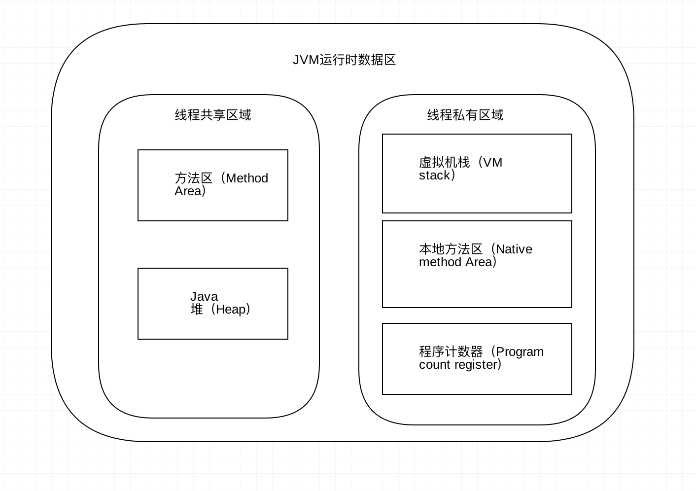
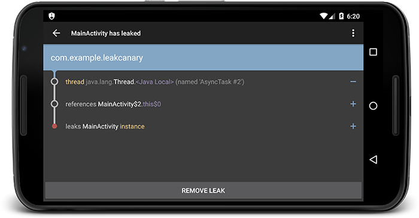

前些天，有人问到 “开发过程中常见的内存泄漏都有哪些？”，一时脱口而出：静态的对象中（包括单例）持有一个生命周期较短的引用时，或内部类的子代码块对象的生命周期超过了外面代码的生命周期（如非静态内部类，线程），会导致这个短生命周期的对象内存泄漏。总之就是一个对象的生命周期结束（不再使用该对象）后，依然被某些对象所持有该对象强引用的场景就是内存泄漏。
这样回答很明显并不是问答人想要的都有哪些场景，所以这里抽时间整理了下内存相关的知识点，及LeakCanary工具的原理分析。
Java内存问题 及 LeakCanary 原理分析
在安卓等其他移动平台上，内存问题显得特别重要，想要做到虚拟机内存的高效利用，及内存问题的快速定位，了解下虚拟机内存模块及管理相关知识是很有必要的，这篇文章将从最基础的知识分析，内存问题的产生地方、原因、解决方案等原理。
一、运行时内存区域

这里以Java虚拟机为例，将运行时内存区分为不同的区域，每个区域承担着不同的功能。
方法区
用户存储已被虚拟机加载的类信息，常量，静态常量，即时编译器编译后的代码等数据。异常状态 OutOfMemoryError，其中包含常量池和用户存放编译器生成的各种字面量和符号引用。
堆
是JVM所管理的内存中最大的一块。唯一目的就是存放实例对象，几乎所有的对象实例都在这里分配。Java堆是垃圾收集器管理的主要区域，因此很多时候也被称为“GC堆”。异常状态 OutOfMemoryError。
虚拟机栈
描述的是java方法执行的内存模型,每个方法在执行时都会创建一个栈帧，用户存储局部变量表，操作数栈，动态连接，方法出口等信息。每一个方法从调用直至完成的过程，就对应着一个栈帧在虚拟机栈中入栈到出栈的过程。 对这个区域定义了两种异常状态 OutOfMemoryError、StackOverflowError。
本地方法栈
虚拟机栈为虚拟机执行java方法，而本地方法栈为虚拟机使用到的Native方法服务。异常状态StackOverFlowError、OutOfMemoryError。
程序计数器
一块较小的内存，当前线程所执行的字节码的行号指示器。字节码解释器工作时，就是通过改变这个计数器的值来选取下一条需要执行的字节码指令。
内存模型
Java内存模型规定了所有的变量都存储在主内存中。每条线程中还有自己的工作内存，线程的工作内存中保存了被该线程所使用到的变量，这些变量是从主内存中拷贝而来。线程对变量的所有操作（读，写）都必须在工作内存中进行。不同线程之间也无法直接访问对方工作内存中的变量，线程间变量值的传递均需要通过主内存来完成。
为了保证内存可见性，常常利用volatile关键子特性来保证变量的可见性（并不能保证并发时原子性）。
二、内存如何回收
内存的分配
一个对象从被创建到回收，主要经历阶段有 1：创建阶段(Created)、2： 应用阶段(In Use)、3：不可见阶段(Invisible)、4：不可达阶段(Unreachable)、5：收集阶段(Collected)、6：终结阶段(、Finalized)、7：对象空间重分配阶段(De-allocated)。
内存的分配实在创建阶段，这个阶段要先用类加载器加载目标class，当通过加载器检测后，就开始为新对象分配内存。对象分配内存大小在类加载完成后便可以确定。
当初始化完成后，虚拟机还要对对象进行必要的设置，如那个类的实例，如何查找元数据、对象的GC年代等。
内存的回收（GC）
那些不可能再被任何途径使用的对象，需要被回收，否则内存迟早都会被消耗空。
GC机制主要是通过可达性分析法，通过一系列称为“GC Roots”的对象作为起始点，从这些节点向下搜索，搜索所走过的路径称为引用链，当一个对象到GC Roots没有任何引用链时，即GC Roots到对象不可达，则证明此对象是不可达的。
根据《深入理解Java虚拟机》书中描述，可作为GC Root的地方如下：
- 虚拟机栈（栈帧中的局部变量区，也叫做局部变量表）中引用的对象。
- 方法区中的类静态属性引用的对象。
- 方法区中常量引用的对象。
- 本地方法栈中JNI(Native方法)引用的对象。
当一个对象或几个相互引用的对象组没有任何引用链时，会被当成垃圾处理，可以进行回收。
如何一个对象在程序中已经不再使用，但是（强）引用还是会被其他对象持有，则称为内存泄漏。内存泄漏并不会使程序马上异常，但是多处的未处理的内存泄漏则可能导致内存溢出，造成不可预估的后果。
引用的分类
在JDK1.2之后，为了优化内存的利用及GC的效率，Java对引用的概念进行了扩充，将引用分为强引用、软引用、弱引用、虚引用4种。
1、强引用，只要强引用还存在，垃圾收集器永远不会回收掉被引用的对象。
2、软引用，在系统将要发生内存溢出异常之前，将会把这些对象列进回收范围进行二次回收。如果这次回收还没有足够的内存，才会抛出内存溢出异常。SoftReference表示软引用。
3、弱引用，只要有GC，无论当前内存是否足够，都会回收掉只被弱引用关联的对象。WeakReference表示弱引用。
4、虚引用，这个引用存在的唯一目的就是在这个对象被收集器回收时收到一个系统通知，被虚引用关联的对象，和其生存时间完全没关系。PhantomReference表示虚引用，需要搭配ReferenceQueue使用，检测对象回收情况。
关于JVM内存管理的一些建议
1、尽可能的手动将无用对象置为null，加快内存回收。
2、可考虑对象池技术生成可重用的对象，较少对象的生成。
3、合理利用四种引用。
三、内存泄漏
持有一个生命周期较短的引用时或内部的子模块对象的生命周期超过了外面模块的生命周期，即本该被回收的对象不能被回收而停留在堆内存中，这就产生了内存泄漏。
内存泄漏是造成应用程序OOM的主要原因之一，尤其在像安卓这样的移动平台，难免会导致应用所需要的内存超过系统分配的内存限额，这就造成了内存溢出Error。
安卓平台常见的内存泄漏
1、静态成员变量持有外部（短周期临时）对象引用。 如单例类（类内部静态属性）持有一个activity（或其他短周期对象）引用时，导致被持有的对象内存无法释放。
2、内部类。当内部类与外部类生命周期不一致时，就会造成内存泄漏。如非静态内部类创建静态实例、Activity中的Handler或Thread等。
3、资源没有及时关闭。如数据库、IO流、Bitmap、注册的相关服务、webview、动画等。
4、集合内部Item没有置空。
5、方法块内不使用的对象，没有及时置空。
四、如何检测内存泄漏
Android Studio供了许多对App性能分析的工具，可以方便分析App性能。我们可以使用Memory Monitor和Heap Dump来观察内存的使用情况、使用Allocation Tracker来跟踪内存分配的情况，也可以通过这些工具来找到疑似发生内存泄漏的位置。
堆存储文件（hpof）可以使用DDMS或者Memory Monitor来生成，输出的文件格式为hpof，而MAT（Memory Analysis Tool）就是来分析堆存储文件的。
然而MAT工具分析内存问题并不是一件容易的事情，需要一定的经验区做引用链的分析，需要一定的门槛。
随着安卓技术生态的发展，LeakCanary 开源项目诞生了，只要几行代码引入目标项目，就可以自动分析hpof文件，把内存泄漏的地方展示出来。
五、LeakCanary原理解析

A small leak will sink a great ship.
LeakCanary内存检测工具是由squar公司开源的著名项目，这里主要分析下源码实现原理。
基本原理
主要是在Activity的&onDestroy方法中，手动调用 GC，然后利用ReferenceQueue+WeakReference，来判断是否有释放不掉的引用，然后结合dump memory的hpof文件, 用HaHa分析出泄漏地方。
源码分析
LeakCanary集成很方便，只要几行代码，所以可以从入口跟踪代码，分析原理
1 2 3 4 5 6 7 8 9
| if (!LeakCanary.isInAnalyzerProcess(WeiboApplication.this)) { LeakCanary.install(WeiboApplication.this); } public static RefWatcher install(Application application) { return ((AndroidRefWatcherBuilder)refWatcher(application) .listenerServiceClass(DisplayLeakService.class).excludedRefs(AndroidExcludedRefs.createAppDefaults().build())) .buildAndInstall(); }
|
从这里可看出，LeakCanary会单独开一进程，用来执行分析任务，和监听任务分开处理。
方法install中主要是构造来一个RefWatcher，
1 2 3 4 5 6 7 8 9 10 11 12 13 14 15 16 17 18 19 20 21 22 23 24 25 26 27 28 29 30 31
| public RefWatcher buildAndInstall() { RefWatcher refWatcher = this.build(); if(refWatcher != RefWatcher.DISABLED) { LeakCanary.enableDisplayLeakActivity(this.context); ActivityRefWatcher.install((Application)this.context, refWatcher); } return refWatcher; } public static void install(Application application, RefWatcher refWatcher) { (new ActivityRefWatcher(application, refWatcher)).watchActivities(); } private final ActivityLifecycleCallbacks lifecycleCallbacks = new ActivityLifecycleCallbacks() { public void onActivityCreated(Activity activity, Bundle savedInstanceState) { } public void onActivityStarted(Activity activity) {} public void onActivityResumed(Activity activity) {} public void onActivityPaused(Activity activity) {} public void onActivityStopped(Activity activity) { } public void onActivitySaveInstanceState(Activity activity, Bundle outState) {} public void onActivityDestroyed(Activity activity) { ActivityRefWatcher.this.onActivityDestroyed(activity); } }; void onActivityDestroyed(Activity activity) { this.refWatcher.watch(activity); }
|
具体监听的原理在于 Application 的registerActivityLifecycleCallbacks方法，该方法可以对应用内所有 Activity 的生命周期做监听, LeakCanary只监听了Destroy方法。
在每个Activity的OnDestroy()方法中都会回调refWatcher.watch()方法，那我们找到的RefWatcher的实现类，看看具体做什么。
1 2 3 4 5 6 7 8 9 10 11 12 13 14 15 16 17 18 19 20 21 22 23 24 25 26 27 28 29 30 31
| public void watch(Object watchedReference, String referenceName) { if(this != DISABLED) { Preconditions.checkNotNull(watchedReference, "watchedReference"); Preconditions.checkNotNull(referenceName, "referenceName"); long watchStartNanoTime = System.nanoTime(); String key = UUID.randomUUID().toString(); this.retainedKeys.add(key); KeyedWeakReference reference = new KeyedWeakReference(watchedReference, key, referenceName, this.queue); this.ensureGoneAsync(watchStartNanoTime, reference); } } final class KeyedWeakReference extends WeakReference<Object> { public final String key; public final String name; KeyedWeakReference(Object referent, String key, String name, ReferenceQueue<Object> referenceQueue) { super(Preconditions.checkNotNull(referent, "referent"), (ReferenceQueue)Preconditions.checkNotNull(referenceQueue, "referenceQueue")); this.key = (String)Preconditions.checkNotNull(key, "key"); this.name = (String)Preconditions.checkNotNull(name, "name"); } } private void ensureGoneAsync(final long watchStartNanoTime, final KeyedWeakReference reference) { this.watchExecutor.execute(new Retryable() { public Result run() { return RefWatcher.this.ensureGone(reference, watchStartNanoTime); } }); }
|
KeyedWeakReference是WeakReference类的子类，用了 KeyedWeakReference(referent, key, name, ReferenceQueue
以下代码ensureGone()方法就是LeakCanary进行检测回收的核心代码：
1 2 3 4 5 6 7 8 9 10 11 12 13 14 15 16 17 18 19 20 21 22 23 24 25 26 27 28 29 30 31 32 33 34 35 36 37 38 39
| Result ensureGone(KeyedWeakReference reference, long watchStartNanoTime) { long gcStartNanoTime = System.nanoTime(); long watchDurationMs = TimeUnit.NANOSECONDS.toMillis(gcStartNanoTime - watchStartNanoTime); this.removeWeaklyReachableReferences(); if(this.debuggerControl.isDebuggerAttached()) { return Result.RETRY; } else if(this.gone(reference)) { return Result.DONE; } else { this.gcTrigger.runGc(); this.removeWeaklyReachableReferences(); if(!this.gone(reference)) { ............ long startDumpHeap = System.nanoTime(); long gcDurationMs = TimeUnit.NANOSECONDS.toMillis(startDumpHeap - gcStartNanoTime); File heapDumpFile = this.heapDumper.dumpHeap(); if(heapDumpFile == HeapDumper.RETRY_LATER) { return Result.RETRY; } long heapDumpDurationMs = TimeUnit.NANOSECONDS.toMillis(System.nanoTime() - startDumpHeap); this.heapdumpListener.analyze(new HeapDump(heapDumpFile, reference.key, reference.name, this.excludedRefs, watchDurationMs, gcDurationMs, heapDumpDurationMs)); } return Result.DONE; } } private boolean gone(KeyedWeakReference reference) { return !this.retainedKeys.contains(reference.key); } private void removeWeaklyReachableReferences() { KeyedWeakReference ref; while((ref = (KeyedWeakReference)this.queue.poll()) != null) { this.retainedKeys.remove(ref.key); } }
|
方法ensureGone中通过检测referenceQueue队列中的引用情况，来判断回收情况，通过手动GC来进一步确认回收情况。
整个过程肯定是个耗时卡UI的，整个过程会在WatchExecutor中执行的，那WatchExecutor又是在哪里执行的呢？
LeakCanary已经利用Looper机制做了一定优化，利用主线程空闲的时候执行检测任务，这里找到WatchExecutor的实现类，研究下原理：
1 2 3 4 5 6 7 8 9 10 11 12 13 14 15 16 17 18 19 20 21 22 23 24 25 26 27 28 29 30 31 32 33 34 35 36 37 38 39 40 41 42 43 44 45 46 47 48 49 50 51 52 53 54 55
| public final class AndroidWatchExecutor implements WatchExecutor { static final String LEAK_CANARY_THREAD_NAME = "LeakCanary-Heap-Dump"; private final Handler mainHandler = new Handler(Looper.getMainLooper()); private final Handler backgroundHandler; private final long initialDelayMillis; private final long maxBackoffFactor; public AndroidWatchExecutor(long initialDelayMillis) { HandlerThread handlerThread = new HandlerThread("LeakCanary-Heap-Dump"); handlerThread.start(); this.backgroundHandler = new Handler(handlerThread.getLooper()); this.initialDelayMillis = initialDelayMillis; this.maxBackoffFactor = 9223372036854775807L / initialDelayMillis; } public void execute(Retryable retryable) { if(Looper.getMainLooper().getThread() == Thread.currentThread()) { this.waitForIdle(retryable, 0); } else { this.postWaitForIdle(retryable, 0); } } void postWaitForIdle(final Retryable retryable, final int failedAttempts) { this.mainHandler.post(new Runnable() { public void run() { AndroidWatchExecutor.this.waitForIdle(retryable, failedAttempts); } }); } void waitForIdle(final Retryable retryable, final int failedAttempts) { Looper.myQueue().addIdleHandler(new IdleHandler() { public boolean queueIdle() { AndroidWatchExecutor.this.postToBackgroundWithDelay(retryable, failedAttempts); return false; } }); } void postToBackgroundWithDelay(final Retryable retryable, final int failedAttempts) { long exponentialBackoffFactor = (long)Math.min(Math.pow(2.0D, (double)failedAttempts), (double)this.maxBackoffFactor); long delayMillis = this.initialDelayMillis * exponentialBackoffFactor; this.backgroundHandler.postDelayed(new Runnable() { public void run() { Result result = retryable.run(); if(result == Result.RETRY) { AndroidWatchExecutor.this.postWaitForIdle(retryable, failedAttempts + 1); } } }, delayMillis); } }
|
这里用到了Handler相关知识，Looper中的MessageQueue有个mIdleHandlers队列，在获取下个要执行的Message时，如果没有发现可执行的下个Msg，就会回调queueIdle()方法。
1 2 3 4 5 6 7 8 9 10 11 12 13 14 15 16 17 18 19 20 21 22 23 24 25 26 27 28 29 30 31 32 33 34 35 36 37 38 39 40 41 42 43 44 45 46 47 48 49 50 51 52 53 54 55 56 57 58 59 60 61 62 63 64 65 66 67 68 69
| Message next() { int pendingIdleHandlerCount = -1; int nextPollTimeoutMillis = 0; for (;;) { ··· ··· if (msg != null) { if (now < msg.when) { nextPollTimeoutMillis = (int) Math.min(msg.when - now, Integer.MAX_VALUE); } else { ··· return msg; } } else { nextPollTimeoutMillis = -1; } if (pendingIdleHandlerCount < 0 && (mMessages == null || now < mMessages.when)) { pendingIdleHandlerCount = mIdleHandlers.size(); } if (pendingIdleHandlerCount <= 0) { mBlocked = true; continue; } if (mPendingIdleHandlers == null) { mPendingIdleHandlers = new IdleHandler[Math.max(pendingIdleHandlerCount, 4)]; } mPendingIdleHandlers = mIdleHandlers.toArray(mPendingIdleHandlers); } for (int i = 0; i < pendingIdleHandlerCount; i++) { final IdleHandler idler = mPendingIdleHandlers[i]; mPendingIdleHandlers[i] = null; boolean keep = false; try { keep = idler.queueIdle(); } catch (Throwable t) { Log.wtf(TAG, "IdleHandler threw exception", t); } if (!keep) { synchronized (this) { mIdleHandlers.remove(idler); } } } pendingIdleHandlerCount = 0; nextPollTimeoutMillis = 0; } }
|
其中的MessageQueue中加入一个IdleHandler，当线程空闲时，就会去调用queueIdle()函数，如果返回值为True，那么后续空闲时会继续的调用此函数，否则不再调用；
知识点
1，用ActivityLifecycleCallbacks接口来检测Activity生命周期
2，WeakReference + ReferenceQueue 来监听对象回收情况
3，Apolication中可通过processName判断是否是任务执行进程
4，MessageQueue中加入一个IdleHandler来得到主线程空闲回调
5，LeakCanary检测只针对Activiy里的相关对象。其他类无法使用，还得用MAT原始方法
六、总结
内存相关的问题基本问题回顾了下，发现技术细节越扒越多。想要得到技术的提高，对这些技术细节的掌握是必要的，只有长时间的积累扎实的技术细节基础，才能让自己的技术走的更高。
基础知识对每个工程师发展的不同阶段意义不同，理解的角度和深度也不同。至少自己来看，基础知识是永远值得学习和巩固，来支撑技术的创新实践。
欢迎转载，请标明出处：常兴E站 canking.win